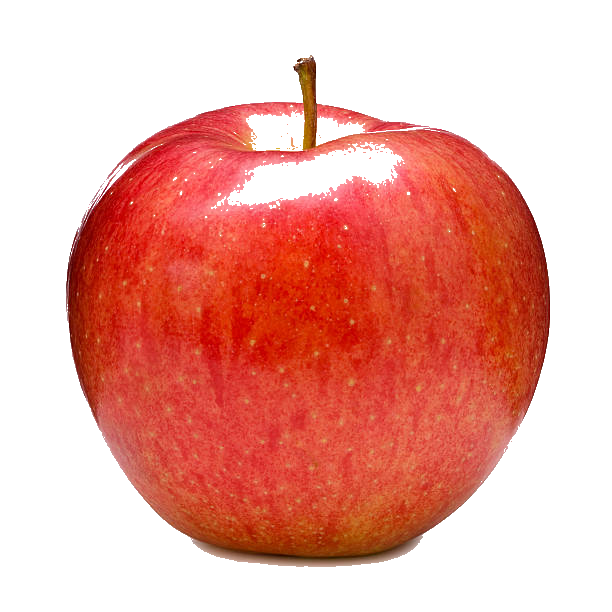
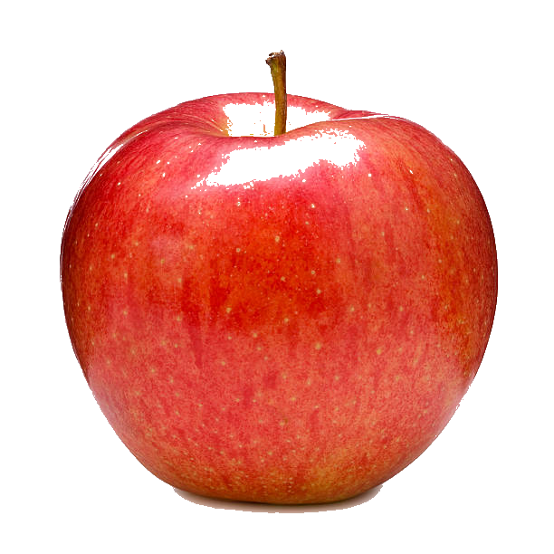

CASE STUDY BETWWEN GOOGLE LENS AND MOBILNET
GOOGLE LENS
-
Test Image-

Output onGOOGLE LENS-
Fuji
Output onMOBILNET MODEL-
punching bag, punch bag ,punching ball, punch ball
Result-
Google lens is more accurate
I have Tested 5 times
GOOGLE LENS have predicted 4 of them more accurately.
And MOBILNETwas less
accurately. So according to my case study
GOOGLE LENS is more accurate

Output onGOOGLE LENS- Fuji
Output onMOBILNET MODEL- punching bag, punch bag ,punching ball, punch ball
Result-
Google lens is more accurate
GOOGLE LENS have predicted 4 of them more accurately. And MOBILNETwas less
accurately. So according to my case study GOOGLE LENS is more accurate